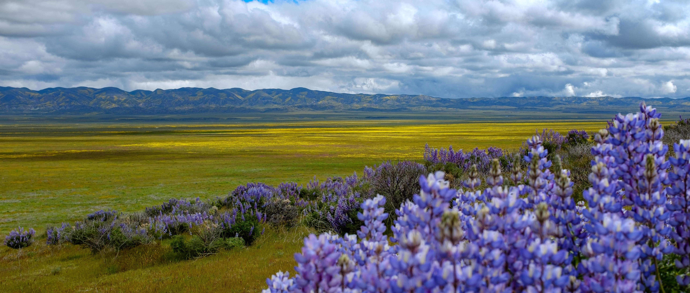

Welcome to Openscapes’ second newsletter! If you’re interested in seeing these infrequent updates in your inbox, please sign up here (linked from our get involved page.
Hello from Openscapes!
We hope your March is off to a good start. We have three upcoming opportunities that we invite you to join and/or share with your colleagues. These include our first Community Call next week and two Champions Cohorts in May-June that have open registration!
Upcoming events
You’ll find all of these opportunities and sign-up information on our events page: openscapes.org/events
Interview with Dr. Dawn Wright at MozFest – March 8 10:15am PST
Please join us for a conversation with Dr. Dawn Wright about the connections between the open science movement, democratized tech, solution-driven science, and climate change. This is our first Community Call, hosted at MozFest, Mozilla’s Internet Festival, and space is limited!

Openscapes Champions: CSU COAST Cohort – May-June
Announcing a new Openscapes Champions opportunity: a CSU COAST Cohort in May-June 2021! Registration is open for research groups affiliated with the California State University Council on Ocean Affairs, Science & Technology (CSU COAST), which supports researchers and affiliates in the California State University system and is funding this opportunity.
Openscapes Champions: CS&S Cohort – May-June
Announcing a second Openscapes Champions opportunity: a CS&S Cohort in May-June 2021! Registration is open for environmental research groups through this opportunity sponsored by Code for Science and Society (CS&S), whose event fund supports events that promote inclusion and broaden participation in open data science that drives scholarship.
Partner spotlight
We are so grateful for our partners who are helping grow and improve Openscapes. Learn more about them on our Team page.
Tara Robertson is a diversity, equity and inclusion consultant working with us to help improve our programming. Tara is an intersectional feminist who uses data and research to advocate for equality and inclusion, and she brings over 12 years experience leading change in open source technology communities, including 3 years leading Diversity and Inclusion at Mozilla.
Our work with Tara is supported by a grant from Code for Science and Society, and our focus is preparing for our Champions program in May-June. The CS&S Cohort is our first-ever “open call”, where participating groups may not have any pre-established community trust. Through our first conversations, Tara has framed psychological safety as a critical piece of the trust-building, and how we can think about this through a lens of diversity, equity, and inclusion.

Openscapes in the Media
These are a few pieces that we’ve contributed to recently.
Supporting Open Research Communities During COVID - Lesack et al. 2021, Code for Science & Society. This piece co-authored by Erin Robinson shares reflections from a discussion at the Joint Roadmap for Open Science Tools (JROST) conference in December 2020. They provide three tips to guide open research communities that normally rely on in-person community-building events: for newly-launched efforts, for first-time remote events, and for downscaling due to funding constraints.
Openscapes embraces kindness and inclusion of open science - SPARC, 2021. This interview with Julie Lowndes builds from her talk at the National Academies of Science, Engineering, and Medicine (NASEM) Roundtable on Aligning Incentives for Open Science in November 2020. It describes Openscapes as an impact story, a way to help turn open science from an idea into a daily benefit for researchers, that also welcomes them into the broader world of “open”.
Thank you for being a part of our community. We’re really excited about all this, and more to come.
Cheers, Julie and Erin

Photo by Elliot Lowndes